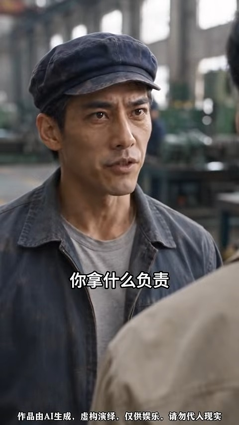

연구
현상과 질문
‘AI 생성’ 표시가 붙어도 사람들은 봅니다. 이 현상에서 질문을 세웠습니다.
현상
‘AI 생성’ 표시가 붙어 있어도, 사람들은 본다

주목한 현상 1표시가 있어도, 얼굴이 닮아도 본다
화면 아래에는 늘 ‘作品由AI生成’이 떠 있고 인물들의 얼굴도 서로 닮았지만, 많은 시청자가 봅니다.
주목한 현상 2실사와 같은 순위표에서 경쟁한다
실사 숏드라마와 AI 숏드라마가 红果短剧의 같은 순위표에서 겨루고, AI 작품이 상위권을 차지합니다.
숫자로 본 규모
1.68억 명红果 하루 이용자전년보다 +107%2026년 7월. 아이치이, 텐센트비디오, 유쿠, 망고TV를 합친 것보다 많음
中新社/21财经, 2026.11.8, QuestMobile 인용
中新社/21财经, 2026.11.8, QuestMobile 인용
새로 나오는 숏드라마는 대부분 AI
95%+
2026년 1분기신규작 약 12.8만 편 중 AI
64%
2026년 2분기신규작 중 AI
그런데 뜨는 작품은 극소수
점 하나가 작품 한 편입니다. 1,000편을 만들면 히트작은 1편도 되지 않습니다.
0.1%, 1,000편 중 1편. 실제 히트율은 이보다 낮음나머지 작품
2025년 만화극도 6만 편 가운데 96편, 0.16%만 1억 뷰를 넘었습니다.
출처: 2026년 1분기 히트율 21财经, 2026.11.8 / 2025년 만화극 蓝鲸财经, DataEye그래서
많이 만들어지지만 소수만 선택됩니다. 그래서 ‘어떤 AI 작품이 왜 선택받는가’를 묻습니다.
질문
인기 AI 숏드라마의 매력은 어디에 있을까?
연구 주제사람들은 왜 AI 숏드라마에 열광하는가?중국 AI 숏드라마의 인기 요인과 문화적 의미
왜 이 주제를 선택했나
01이야기를 정하는 제작 방식
AI는 제작비와 인력을 크게 줄입니다. 실사 제작비 30~40만 위안을 AI는 10만 위안 미만으로 낮추며, 검증된 흥행 공식을 반복하기 쉬워집니다.
출처: Caixin, 2026.6.102대중 서사 취향의 지표
红果의 월간 이용자는 3.57억 명입니다. 인기 장면에는 빠른 전개와 반전, 현실의 욕망을 반영한 이야기가 담겨 있습니다.
출처: 西南证券, 2026 Q4 전략03많이 만들어도 소수만 뜬다
2026년 1분기 신규 숏드라마의 95% 이상이 AI 제작이지만, 히트율은 0.1% 미만입니다. 따라서 AI 제작 자체보다 선택받는 이유를 분석해야 합니다.
출처: Sixth Tone, 2026.8.24, 21财经, 2026.11.8연구 문제 두 가지
두 문제의 연결
문제 1이 ‘무엇이 다른가’를 밝히면, 문제 2는 ‘그 차이가 시청자에게 무엇을 주는가’를 묻습니다. 1의 답이 2의 재료가 되고, 두 답이 모여 아래 주장이 됩니다.
잠정적 주장
인기 AI 숏드라마는 기존 숏폼의 정서적 만족을 계승하면서, AI가 구현하는 새로운 시각적 경험을 결합한다.
출처: 팀 발표자료 Mission 3, 2026.11.16 / Task 2 연구 구상, 2026.11.9. 각 수치의 출처는 숫자 바로 아래에 적었습니다.